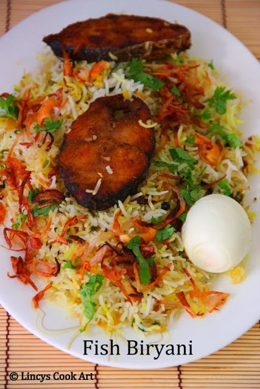

I absolutely love Chirala Beach for its breathtaking natural beauty and serene atmosphere because it combines my love for water and the company of friends. The serene atmosphere and the joy of spending time with friends by the water bring me immense happiness and create cherished memories.
I have a deep love for Fish Biriyani because there we can get fresh fish directly from the beach, and the spices and preparation process are very interesting. Having the Fish Biriyani while seated at the seashore was a next-level experience. The combination of the savory fish, aromatic spices, and the soothing sound of the waves made it a culinary delight and an unforgettable dining experience.
